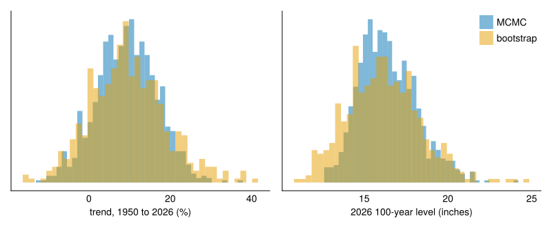

Lab 7: Regional frequency analysis with a CO2 trend
In this lab, you will estimate the 100-year daily rainfall in 2026 at a coastal gauge with a short record. You will let the rainfall extremes change with CO2, and borrow data from nearby gauges to make up for the short record. Class does not meet on Friday, October 9, so you will work through this lab on your own.
Objectives
By the end of this lab, you will be able to:
- Fit a GEV that changes with CO2 by weighted likelihood.
- Choose which stations to borrow from with a weight function.
- Get an interval by MCMC and by a bootstrap over years, and explain why they differ.
- Make and defend a choice of weight function and of which parameters to share.
Setup
First, load the packages.
Rainfall data
You will analyze annual maximum daily rainfall from NOAA Atlas 14, Volume 11, which covers Texas (Perica et al., 2018). The file dur01d_ams_na14v11.txt is the 1-day annual maximum series that NOAA published with the atlas, downloaded unchanged from the NOAA Hydrometeorological Design Studies Center. It holds 816 stations, with one annual maximum per calendar year, in inches, through 2017. After a title line, the file has one block per station, separated by blank lines. Each block starts with a header line giving the station’s ID, name, state, latitude, longitude, and elevation in feet, followed by one line per year giving the date of that year’s maximum and its value.
Some of the code blocks in this lab are “folded” to improve readability. Click the triangle next to a label such as “Show the file reader” to see the code. A numbered marker at the end of a line explains that line; hover over it to read the note.
Show the file reader
function read_station(block)
header, rows... = split(block, '\n')
fields = strip.(split(header, ','))
lat, lon, elev_ft = parse.(Float64, fields[(end - 2):end])
days = split.(rows)
return DataFrame(;
id=fields[1], name=join(fields[2:(end - 4)], ","), lat,
lon, elev_ft,
date=Date.(first.(days), dateformat"mm/dd/yyyy"),
prcp_in=parse.(Float64, last.(days)))
end
function read_atlas14(path)
blocks = split(strip(join(Iterators.drop(eachline(path), 1), '\n')),
r"\n\s*\n")
return reduce(vcat, read_station.(blocks))
end
ann_max_texas = read_atlas14(joinpath(here, "dur01d_ams_na14v11.txt"))
ann_max_texas.year = year.(ann_max_texas.date)
first(ann_max_texas, 4)- 1
- The first line of a block is the station’s header, and each line after it is one year.
- 2
- A station’s name can contain a comma, so the header is read from both ends: the ID is the first field, and the last three are latitude, longitude, and elevation.
- 3
- Skip the title line and split the rest of the file into one block per station.
- 4
- Turn each block into a table and stack the tables, one row per station and year.
| Row | id | name | lat | lon | elev_ft | date | prcp_in | year |
|---|---|---|---|---|---|---|---|---|
| SubStrin… | String | Float64 | Float64 | Float64 | Date | Float64 | Int64 | |
| 1 | 60-0011 | CLEAR CK AT BAY AREA BLVD | 29.4977 | -95.1599 | 2.0 | 1987-06-11 | 6.31 | 1987 |
| 2 | 60-0011 | CLEAR CK AT BAY AREA BLVD | 29.4977 | -95.1599 | 2.0 | 1988-09-02 | 5.46 | 1988 |
| 3 | 60-0011 | CLEAR CK AT BAY AREA BLVD | 29.4977 | -95.1599 | 2.0 | 1989-08-01 | 11.39 | 1989 |
| 4 | 60-0011 | CLEAR CK AT BAY AREA BLVD | 29.4977 | -95.1599 | 2.0 | 1990-05-03 | 3.32 | 1990 |
CO2 data
The file logCO2.csv has one row per year from 1849 to 2025. Its column log_CO2 is the natural log of annual mean atmospheric CO2, in parts per million. Before 1959 it comes from the Law Dome ice core record (Etheridge et al., 1996; MacFarling Meure et al., 2006); from 1959 it is the Mauna Loa annual mean from NOAA’s Global Monitoring Laboratory.
The covariate is the number of doublings of CO2 above the pre-industrial level of 280 ppm:
\[ x_t = \log_2 \frac{\text{CO}_2(t)}{280}. \]
The file stops at 2025, at 427 ppm. CO2 rose about 2.6 ppm per year from 2015 to 2025, so for 2026 we assume 430 ppm.
The target station
You will estimate the 100-year daily rainfall in 2026 at Galveston Scholes Field (station 79-0047), on Galveston Island. Many real gauges have short records, so you will use only its 21 years from 1997 to 2017.
Choosing the stations
To borrow from neighbors, we first need each station’s distance to Scholes Field. With latitudes \(\phi_1, \phi_2\) and longitudes \(\lambda_1, \lambda_2\), the haversine formula gives the great-circle distance
\[ d = 2R \arcsin \sqrt{\sin^2\left(\frac{\phi_2 - \phi_1}{2}\right) + \cos\phi_1 \cos\phi_2 \sin^2\left(\frac{\lambda_2 - \lambda_1}{2}\right)}, \]
where \(R = 3958.8\) miles is the radius of the Earth.
function miles_between(lat1, lon1, lat2, lon2)
R = 3958.8
north_south = sind((lat2 - lat1) / 2)^2
east_west = cosd(lat1) * cosd(lat2) * sind((lon2 - lon1) / 2)^2
return 2R * asin(sqrt(north_south + east_west))
end
ann_max_texas.miles = miles_between.(scholes_field.lat, scholes_field.lon,
ann_max_texas.lat, ann_max_texas.lon)The weight function
A weight function says how much each station counts, from 1 (as much as Scholes Field) to 0 (not at all). As an example, we consider one that falls linearly with distance \(d\) and reaches zero at a radius \(r\):
\[ w(d) = \max\left(0, 1 - \frac{d}{r}\right). \]
To try a different weight function, edit weight(miles) above and rerun the notebook from there. Some options:
- Region of influence: \(w(d) = 1\) if \(d \le r\), and 0 otherwise.
- Inverse distance squared: \(w(d) = \min\left(1, (d_0 / d)^2\right)\) if \(d \le r\), and 0 otherwise.
- Exponential kernel: \(w(d) = \exp(-d / L)\), with length scale \(L\).
We keep the stations with weight above zero. The effective number of stations, \(n_\text{eff} = \sum_s w_s\), is how many stations’ worth of data the fit uses.
ann_max_texas.w = weight.(ann_max_texas.miles)
ann_max_region = ann_max_texas[ann_max_texas.w .> 0, :]
stations = combine(groupby(ann_max_region, [:id, :name, :lat, :lon, :miles, :w]),
nrow => :n_years)
sort!(stations, :miles)
@printf("%d stations kept, n_eff = %.1f\n", nrow(stations), sum(stations.w))20 stations kept, n_eff = 6.1The maps in this lab draw land from the 1:10m layer of Natural Earth, which the NaturalEarth package downloads on first use. map_axis makes an axis with that background.
land = naturalearth("land", 10)
function map_axis(position)
ax = Axis(position; autolimitaspect=1 / cosd(scholes_field.lat),
backgroundcolor=:aliceblue)
poly!(ax, land.geometry; color=:gray95, strokecolor=:gray60,
strokewidth=0.5, xautolimits=false, yautolimits=false)
hidedecorations!(ax)
return ax
end- 1
- Stretch latitude by \(1 / \cos\phi\) at Scholes Field, so a mile east and a mile north are the same length on the map.
Show the plotting code
let
fig = Figure(; size=(800, 380))
ax_map = map_axis(fig[1, 1])
stations_plot = scatter!(ax_map, stations.lon, stations.lat;
color=stations.w, colormap=:viridis,
colorrange=(0, 1), markersize=10)
scatter!(ax_map, [scholes_field.lon], [scholes_field.lat]; marker=:star5,
color=:black, markersize=20)
Colorbar(fig[1, 2], stations_plot; label="weight")
at_scholes = ann_max_region.id .== scholes_field.id
ax_series = Axis(fig[1, 3]; xlabel="year", ylabel="annual maximum (inches)")
scatter!(ax_series, ann_max_region.year, ann_max_region.prcp_in;
color=(colors[1], 0.4), markersize=5)
scatter!(ax_series, ann_max_region.year[at_scholes],
ann_max_region.prcp_in[at_scholes]; color=:black, markersize=8)
fig
end
Nonstationary model
We allow a trend in both the location and the scale, and assume the two are proportional:
\[ \begin{aligned} y_t &\sim \text{GEV}(\mu_t, \sigma_t, \xi) \\ \mu_t &= \mu_0 e^{\beta x_t} \\ \sigma_t &= \kappa \mu_t \end{aligned} \]
In lab 6, the location and the log scale each had their own trend. Here a single parameter, \(\beta\), sets the trend in both:
- \(\mu_0\) is the location at the pre-industrial level, \(x = 0\).
- When \(x\) rises by \(\Delta x\), both \(\mu_t\) and \(\sigma_t\) are multiplied by \(e^{\beta \Delta x}\).
- \(\kappa\) is the ratio of scale to location, the same in every year.
- \(\xi\) is the shape, also the same in every year.
Since the location and scale change by the same factor and the shape does not change, every return level changes by that factor too. We report the trend as the percent change in every return level from 1950 to 2026, \(100\left(e^{\beta (x_{2026} - x_{1950})} - 1\right)\).
To borrow from neighbors, we weight each station’s log-likelihood by \(w_s\) and add them up:
\[ \ell(\mu_0, \kappa, \beta, \xi) = \sum_s w_s \sum_t \log f(y_{s,t} \mid \mu_0, \kappa, \beta, \xi), \]
where \(f\) is the GEV density. With a single station and \(w = 1\), this is the ordinary log-likelihood.
weighted_gev writes this as a Turing model.
@model function weighted_gev(y, x, w)
μ0 ~ LogNormal(1.5, 0.5)
κ ~ LogNormal(-1, 0.5)
β ~ Normal(0, 0.5)
ξ ~ Uniform(-0.5, 0.5)
μ = μ0 .* exp.(β .* x)
σ = κ .* μ
if !all(σ .> 0)
Turing.@addlogprob! -Inf
return nothing
end
Turing.@addlogprob! sum(w .* logpdf.(GeneralizedExtremeValue.(μ, σ, ξ), y))
end- 1
- These priors give 2026 100-year levels between about 3 and 70 inches, and trends between about \(-37\%\) and \(+58\%\) from 1950 to 2026.
- 2
-
A large optimizer step can push \(\mu_t\) so close to zero or so large that the scale rounds to 0 or becomes
NaN; reject that step rather than stop with an error. - 3
-
A
y ~line cannot weight observations, so the model adds the weighted log-likelihood itself.
weighted_gevfit finds the parameters with the highest posterior density, using Turing’s maximum_a_posteriori. Two helper functions after it keep the later code short.
function weighted_gevfit(y, x, w)
start = InitFromParams((μ0=median(y), κ=std(y) / median(y), β=0.0, ξ=0.1))
fit = maximum_a_posteriori(weighted_gev(y, x, w); initial_params=start)
if string(fit.optim_result.retcode) != "Success"
@warn "weighted_gevfit did not converge" fit.optim_result.retcode
end
return NamedTuple(fit.params)
end
function level_2026(fit)
μ = fit.μ0 * exp(fit.β * x_2026)
return quantile(GeneralizedExtremeValue(μ, fit.κ * μ, fit.ξ), 0.99)
end
trend_percent(fit) = 100 * (exp(fit.β * (x_2026 - x_1950)) - 1)- 1
- Start the optimizer from the data’s median and spread, with no trend.
- 2
- Warn if the optimizer fails, since the parameters it returns may then not be the best ones.
- 3
- The fitted 100-year level in 2026.
- 4
- The trend, as the percent change in every return level from 1950 to 2026.
No pooling
First, we fit each kept station to its own record.
stations.fit = map(stations.id) do id
rows = ann_max_region[ann_max_region.id .== id, :]
return weighted_gevfit(rows.prcp_in, rows.x, ones(nrow(rows)))
end
stations.κ = [fit.κ for fit in stations.fit]
stations.trend_percent = trend_percent.(stations.fit)
stations.level_2026 = level_2026.(stations.fit)
stations[:, [:name, :miles, :n_years, :κ, :trend_percent, :level_2026]]| Row | name | miles | n_years | κ | trend_percent | level_2026 |
|---|---|---|---|---|---|---|
| String | Float64 | Int64 | Float64 | Float64 | Float64 | |
| 1 | GALVESTON SCHOLES FLD | 0.0 | 21 | 0.406968 | 2.72376 | 13.9099 |
| 2 | GALVESTON | 4.52325 | 137 | 0.409822 | -15.2855 | 11.8514 |
| 3 | ALVIN | 23.4338 | 107 | 0.358851 | 6.0357 | 16.6412 |
| 4 | CLEAR CK AT BAY AREA BLVD | 23.8355 | 30 | 0.363389 | 4.02144 | 17.8668 |
| 5 | TURKEY CK AT FM 1959 | 29.176 | 30 | 0.283562 | 16.1389 | 19.3294 |
| 6 | ARMAND BYU AT GENOARED BLF RD | 29.2355 | 31 | 0.348342 | 18.5771 | 22.471 |
| 7 | GOOSE CREEK | 32.434 | 76 | 0.349925 | -2.70805 | 13.0548 |
| 8 | HOUSTON DEER PARK | 35.4218 | 63 | 0.376562 | -6.65699 | 15.3583 |
| 9 | HOUSTON HOBBY AP | 35.8056 | 85 | 0.370008 | 24.2044 | 17.5356 |
| 10 | ANGLETON 2 W | 37.0614 | 102 | 0.388976 | 1.80193 | 15.3244 |
| 11 | FREEPORT 2 NW | 37.2764 | 94 | 0.400511 | -22.464 | 14.496 |
| 12 | BAYTOWN | 37.4946 | 58 | 0.393318 | 10.4499 | 15.5509 |
| 13 | ANAHUAC | 38.0354 | 99 | 0.343279 | 24.7499 | 17.9205 |
| 14 | HOUSTON-PORT | 41.2936 | 29 | 0.393411 | 9.13171 | 34.5485 |
| 15 | HOUSTON WB CITY | 45.2242 | 125 | 0.358468 | 19.7183 | 14.5521 |
| 16 | HOUSTON SAN JACINTO DA | 47.765 | 64 | 0.382318 | 17.8083 | 16.0254 |
| 17 | GREENS BYU AT MT HOUSTON PKWY | 48.4303 | 31 | 0.414977 | 7.86909 | 27.4815 |
| 18 | THOMPSONS 3 WSW | 48.6821 | 59 | 0.37095 | 0.20453 | 15.2176 |
| 19 | CEDAR BYU AT US 90 | 48.9298 | 31 | 0.453029 | 2.98738 | 29.5425 |
| 20 | HOUSTON HEIGHTS | 49.426 | 57 | 0.280484 | 88.8029 | 20.8424 |
Show the plotting code
let
fig = Figure(; size=(900, 380))
biggest = maximum(abs, stations.trend_percent)
ax_trend = map_axis(fig[1, 1])
trend_plot = scatter!(ax_trend, stations.lon, stations.lat;
color=stations.trend_percent, colormap=:BrBG,
colorrange=(-biggest, biggest), markersize=12,
strokewidth=0.5, strokecolor=:gray30)
Colorbar(fig[1, 2], trend_plot; label="trend, 1950 to 2026 (%)")
ax_level = map_axis(fig[1, 3])
level_plot = scatter!(ax_level, stations.lon, stations.lat;
color=stations.level_2026, colormap=:viridis,
markersize=12, strokewidth=0.5, strokecolor=:gray30)
Colorbar(fig[1, 4], level_plot; label="2026 100-year level (inches)")
for ax in (ax_trend, ax_level)
scatter!(ax, [scholes_field.lon], [scholes_field.lat]; marker=:star5,
color=:black, markersize=20)
end
fig
end
Your answer: How much do the trends differ between stations a few miles apart? Is that more likely a real difference in climate or noise from short records, and what in the table supports your answer?
Your answer: How much does \(x_t\) change over Scholes Field’s 21 years, compared with a record that starts around 1900? So what sets Scholes Field’s trend when you fit it alone?
Borrowing from neighbors
Now we fit Scholes Field with every kept station’s data, weighted by weight.
pooled = weighted_gevfit(ann_max_region.prcp_in, ann_max_region.x,
ann_max_region.w)
scholes_alone = only(stations.fit[stations.id .== scholes_field.id])
for (label, fit) in ("alone" => scholes_alone, "pooled" => pooled)
@printf("%-6s trend %+.0f%% from 1950 to 2026, 2026 100-year level %.1f inches\n",
label, trend_percent(fit), level_2026(fit))
endalone trend +3% from 1950 to 2026, 2026 100-year level 13.9 inches
pooled trend +10% from 1950 to 2026, 2026 100-year level 16.2 inchesUncertainty
A point estimate alone does not say how much to trust it. We get an interval for the pooled fit in two ways.
MCMC
MCMC samples the posterior of the same weighted model.
Bootstrap over years
The bootstrap refits the model to resampled data, drawing whole years rather than single values.
- 1
- Draw as many years as the record has, with replacement.
- 2
- Keep every station’s value from each drawn year, so a storm that hit many stations in one year stays together.
Show the plotting code
let
fig = Figure(; size=(800, 330))
ax_trend = Axis(fig[1, 1]; xlabel="trend, 1950 to 2026 (%)")
ax_level = Axis(fig[1, 2]; xlabel="2026 100-year level (inches)")
for (i, (label, fits)) in enumerate(("MCMC" => mcmc_fits,
"bootstrap" => bootstrap_fits))
hist!(ax_trend, trend_percent.(fits); bins=40, normalization=:pdf,
color=(colors[i], 0.5), label=label)
hist!(ax_level, level_2026.(fits); bins=40, normalization=:pdf,
color=(colors[i], 0.5), label=label)
end
hideydecorations!.((ax_trend, ax_level))
axislegend(ax_level)
fig
end
MCMC 2026 100-year level, 95% interval 13.5 to 20.2 inches
bootstrap 2026 100-year level, 95% interval 12.2 to 20.6 inchesYour answer: How many kept stations have a 2017 annual maximum, and on what dates did those maxima fall? The weighted likelihood treats every station’s value as independent. Which method keeps the 2017 values together, and which interval would you expect to be wider?
Your analysis
Change the weight function
Change radius and rerun the notebook from the weight function down. Then code one of the other weight functions and run it the same way.
Your answer: Make a table with one row per weight function you tried, giving the number of stations kept, \(n_\text{eff}\), the pooled trend, and the 2026 100-year level with its bootstrap interval. Which settings give an estimate dominated by variance, and which by bias? Name a physical reason a wide region could be biased for a station on Galveston Island.
Defend a choice
Your answer: What is your estimate of the 100-year daily rainfall at Galveston Scholes Field in 2026, with an interval? Say which weight function and radius you chose, which parameters you shared, and which interval you report, and defend each choice.
Turning it in
This lab is due on Canvas on Friday, October 16, the same day as Test 1.
Check that your notebook answers each Your answer question.
Render the notebook to a PDF. In the terminal, from the lab folder, run:
This writes
index.pdfbeside the notebook. It runs the whole notebook from the top in a fresh process, so it also confirms your work does not depend on leftover REPL state.Commit and push your work, with GitHub Desktop or by asking Claude to commit and push.
Upload
index.pdfto the Lab 7 assignment on Canvas.Paste the link to your repository in the same Canvas submission.
If the render fails and you cannot fix it, upload what you have and say where it broke. A lab that does not render is worth more to me than a lab you did not turn in.